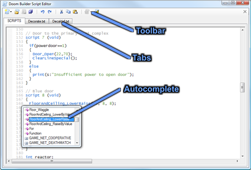

The script editor is a powerful text editor with syntax highlighting and autocomplete. It allows you to open and edit multiple documents at the same time, even if they do not reside in your map.
Each opened script has its own tab page. When there are text lumps in the map format (such as the SCRIPTS lump in Hexen formats), they will be opened automatically and cannot be closed.
| CTRL+O | Browse for a script file to open. |
| CTRL+S | Save the current script to file. This does not work for internal script lumps, save the map to save the internal script lumps. |
| CTRL+Space | Autocompletes the current word. If there is more than one possibility, it will pop up a list of keywords to choose from. |
| CTRL+F | Opens the Find and Replace dialog window. |
| F3 | Finds the next occurence of the most recent search with the Find and Replace dialog window. |
| F2 | If supported for the type of script you are editing, this opens a website with information about the current keyword that your cursor is at. |